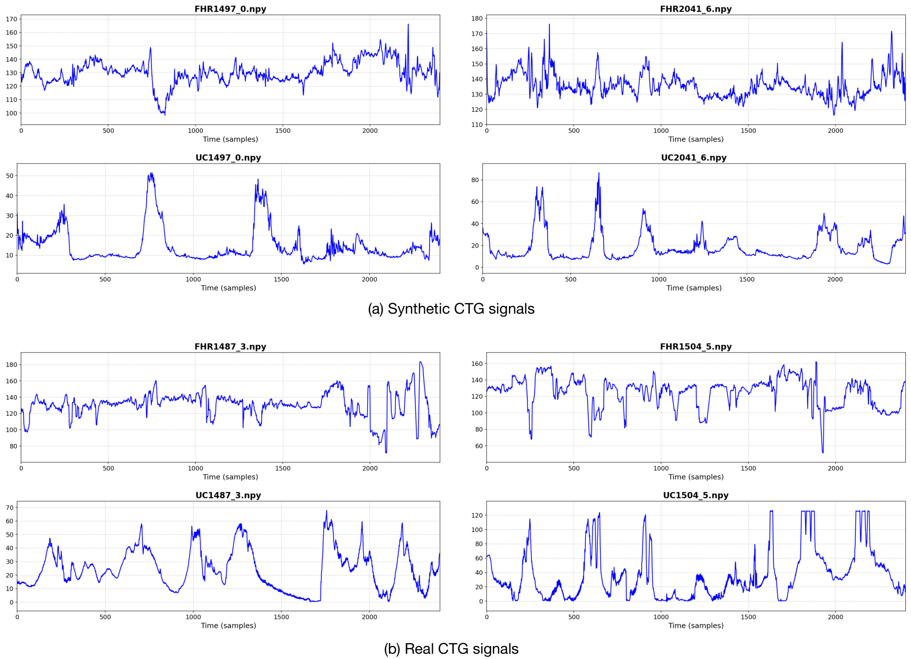
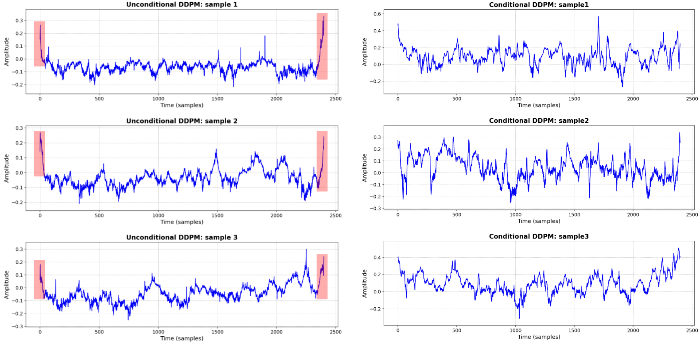
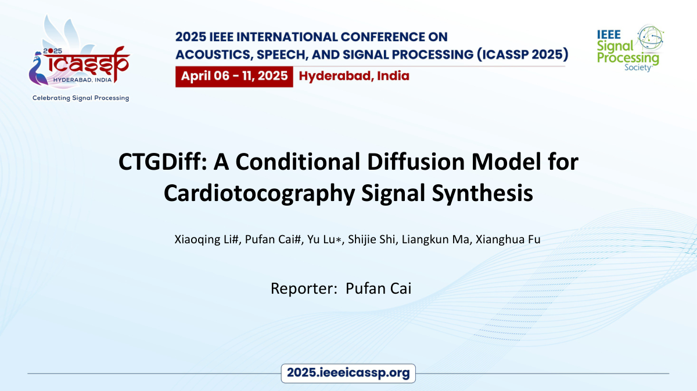
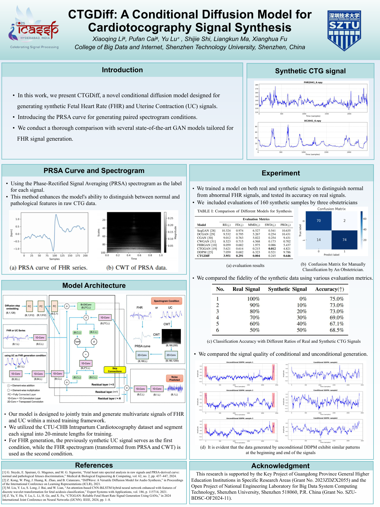

ICASSP 2025
CTGDiffA Conditional Diffusion Model for Cardiotocography Signal Synthesis
1 College of Big Data and Internet, Shenzhen Technology University, Shenzhen, China
2 National Engineering Laboratory for Big Data System Computing Technology, Shenzhen University, Shenzhen, China
3 Department of Surgery, Yong Loo Lin School of Medicine, National University of Singapore, Singapore
4 School of Applied Technology, Shenzhen University, Shenzhen, China
5 Department of Obstetrics and Gynecology, Peking Union Medical College Hospital, Beijing, China
# Equal contribution; co-first authors.
* Corresponding author: lvyu@sztu.edu.cn
Generate UC first, then use it to condition FHR synthesis.
Generate uterine contraction signals first, then condition FHR generation on the synthesized UC trace and a PRSA spectrogram. This extends the output from FHR alone to both CTG channels.

- Output
- UC and fetal heart rate
- Conditions
- Spectrograms and UC
- Generative model
- Conditional diffusion
Overview
Extend conditional generation to both channels of a CTG recording.
Cardiotocography combines fetal heart rate (FHR) and uterine contraction (UC) signals. CTGDiff introduces a sequential generation process: a conditional diffusion model synthesizes UC, and the generated UC trace becomes an additional condition for FHR synthesis.
PRSA spectrograms describe the FHR condition, while a CWT spectrogram conditions UC generation. The study evaluates synthetic signals, reviews examples with obstetricians, and tests different real/synthetic training-data ratios.
Method
- 01
Prepare the conditions
Use mixed training for FHR and UC. Construct a CWT spectrogram for UC and a PRSA-derived CWT spectrogram for FHR, with UC as an additional FHR condition.
- 02
Generate uterine contractions
Denoise a UC signal under its spectrogram condition to obtain a synthetic contraction trace.
- 03
Generate fetal heart rate
Use the generated UC trace together with the FHR PRSA spectrogram to condition iterative FHR denoising.
Dataset and signal preparation
The study uses the CTU-UHB database (552 recordings, 4 Hz). Preprocessing handles missing intervals, interpolates short gaps, excludes recordings with more than 10% missing data, and detrends the signals.
Twenty-minute windows are downsampled from 4,800 to 2,400 points. UC and FHR use their respective conditioning inputs in the diffusion process.
Results
The published quantitative comparison evaluates FHR generation. CTGDiff has the lowest RE, FD, MMD, and PRD among the listed models; CTGGAN has the lowest SWD.
| Model | RE ↓ | FD ↓ | MMD ↓ | SWD ↓ | PRD ↓ |
|---|---|---|---|---|---|
| SeqGAN | 10.324 | 0.974 | 6.527 | 0.541 | 10.635 |
| DCGAN | 9.532 | 0.795 | 5.267 | 0.254 | 10.431 |
| CGAN | 9.012 | 0.763 | 5.022 | 0.254 | 9.431 |
| CWGAN | 8.523 | 0.715 | 4.568 | 0.173 | 0.702 |
| FHRGAN | 8.059 | 0.682 | 1.975 | 0.086 | 5.437 |
| CTGGAN | 5.621 | 0.614 | 0.215 | 0.012 | 4.821 |
| DDPM | 7.059 | 0.682 | 6.323 | 0.521 | 9.786 |
| CTGDiff | 3.951 | 0.291 | 0.004 | 0.245 | 0.646 |
RE: relative entropy; FD: Fréchet distance; MMD: maximum mean discrepancy; SWD: sliced Wasserstein distance; PRD: percent root mean square difference. Lower is better (↓); bold marks the lowest value in each column.


Replacing part of the training data with synthetic signals
An attention-based CNN–BiLSTM classifier is trained with different real/synthetic ratios and evaluated exclusively on real signals. The reported accuracies decrease relative to the all-real training baseline.
| Real signals | Synthetic signals | Accuracy ↑ |
|---|---|---|
| 100% | 0% | 75.0% |
| 90% | 10% | 73.0% |
| 80% | 20% | 73.0% |
| 70% | 30% | 69.0% |
| 60% | 40% | 67.1% |
| 50% | 50% | 68.5% |
This experiment studies replacement of real training examples with synthetic examples. It does not show an accuracy improvement from synthetic-data augmentation.
Conditional and unconditional signal examples


Expert review and remaining questions
The paper reports review of 160 synthetic samples by three obstetricians. It also identifies a remaining need for systematic analysis of FHR–UC relationships and stronger evaluation of physiological consistency across the two generated channels.
Presentation materials
Original presentation materials accompanying the paper.


Resources
Citation
Please cite the paper if you use this method or its results.
@inproceedings{li2025ctgdiff,
title = {{CTGDiff}: A Conditional Diffusion Model for Cardiotocography Signal Synthesis},
author = {Li, Xiaoqing and Cai, Pufan and Lu, Yu and Shi, Shijie and Ma, Liangkun and Fu, Xianghua},
booktitle = {ICASSP 2025 - 2025 IEEE International Conference on Acoustics, Speech and Signal Processing (ICASSP)},
year = {2025},
pages = {1--5},
publisher = {IEEE},
doi = {10.1109/ICASSP49660.2025.10889762},
url = {https://doi.org/10.1109/ICASSP49660.2025.10889762}
}Contact
For questions about this work, please contact Yu Lu at lvyu@sztu.edu.cn.